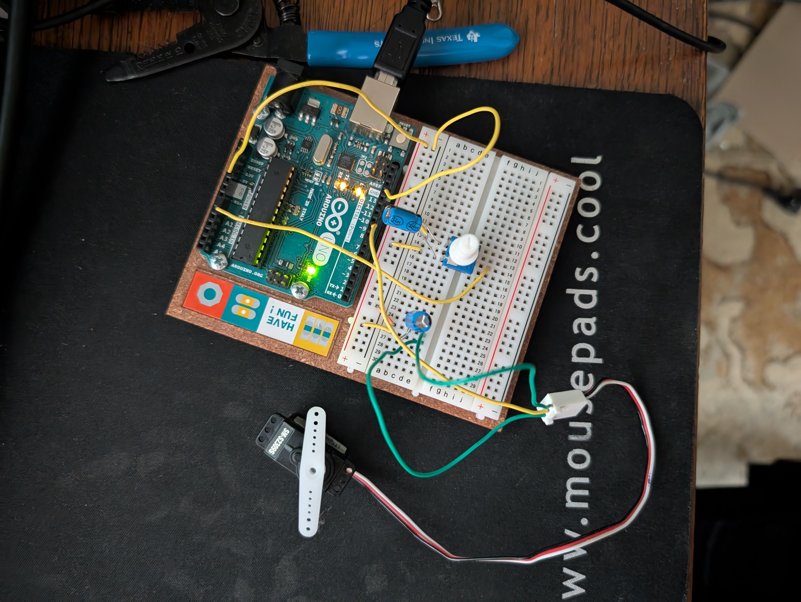
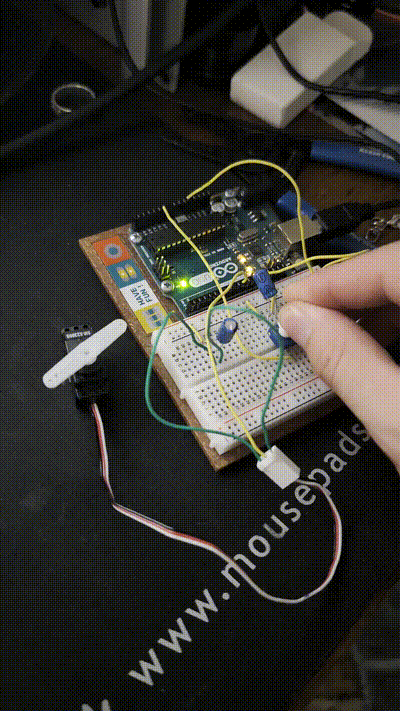

hw5 blog post
Homework 5 brought up the inclusion of arduino libraries and working with external scripts. We also got to mess with servos! Which provided a much more interactive medium to see the results of inputs and outputs. We also got to use capacitors in a setup for the first time. A potentiometer was set up to an analog input, and the resulting input was parsed and sent to a digital output to control the position of servo. The map() function was incredibly handy for setting the analog inputs to the range of the digital output for the servo.
The capacitors anodes were muuuuch longer than the cathodes and made them incredibly annoying to work with, as I had to bend and fumble with the cathode to make them fit flush on the breadboard. Nonetheless, I found this exercise to be much easier than the ones before it somehow! It was very fun to see more physical changing effects in real time when you would turn the potentiometer and see the servo move.

Getting there-

A much more visual interaction!
Circuit Diagram